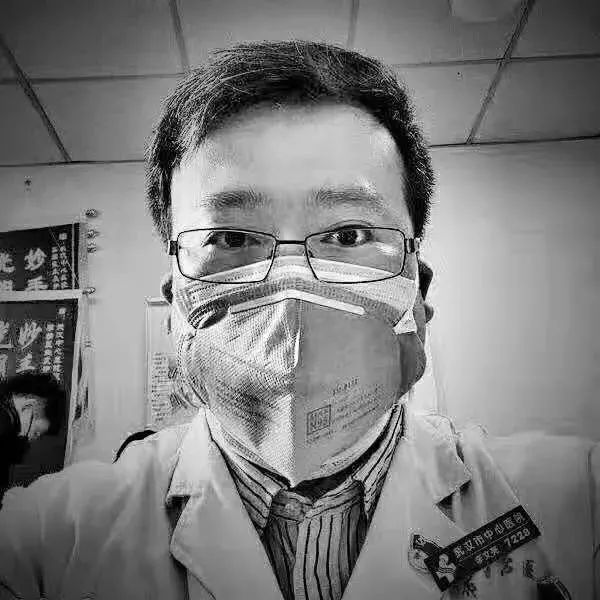
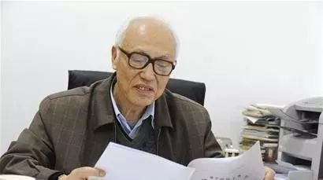

没时间悲伤，他们需要帮助
原文链接 备份链接 司机停下车来思忖着说，怎么给导到这里来了？ 那是一条土路，树在旁边矗立着。春天还没到来，它的叶子还没长出来。 “前方800米左转，500米后再左转”，导航里的声音软糯着。 金银潭医院是此次行程的目的地。这是武汉市最大的 …

实习记者 | 袁 颖
编辑 | 许诗雨
疫情让人们了解到了医疗资源的可贵。保护医务人员和医学技术领域的人才就是保护其他人的生命。然而，医务人员的职业特殊性也意味着他们受到感染的风险也更高。
2月14日下午，在国务院举行的应对感染肺炎疫情联防联控机制新闻发布会上，国家卫生健康委副主任曾益新介绍，截至2月11日24时，全国医务人员确诊新冠肺炎1716例，占全国确诊病例3.8%，其中6人不幸死亡，占全国死亡病例0.4%。
不止是医护工作者，还有许多人倒在了对抗疫情的战线上。例如55岁的武汉人何辉。疫情出现后，武汉人何辉自愿参加了医护人员志愿者车队，义务接送医护人员下班。据何辉家人称，何辉于除夕前后加入武汉志愿者车队，后因身体出现不适，何辉才中断了志愿者工作。1月30日前后，何辉出现咳嗽、发烧等症状，后在华中科技大学同济医学院附属同济医院做核酸检测，结果为双阳，2月2日晚转院到同济医院中法新城院区。2月3日16时，何辉因救治无效在武汉同济医院中法新城院区去世。
在这场疫情中，所有逝者都值得被记住姓名。我们在此仅用记录的方式对在这次疫情中逝去的医务工作者和医学领域的学者表达敬意。
梁武东 62岁
湖北省中西医结合医院(新华医院)耳鼻喉科原主任医师
梁武东擅长显微耳神经外科、鼻内窥镜微创手术、鼾症、小儿耳鼻咽喉疾病、嗓音疾病的内外科治疗。鼾症喉癌功能性手术技术精湛，对分泌性中耳炎治疗方法独特，在嗓音内外科矫治领域颇有心得。
1月16日，梁武东疑似感染新型冠状病毒肺炎，18日，其转到金银潭医院就诊。后经救治无效，梁武东于2020年1月25日早上7时许去世。
李文亮 34岁
武汉市中心医院眼科医生、抗击新型冠状病毒肺炎一线医生，因最早于2019年12月30日向外界发出防护预警，而被称为疫情“吹哨人”。

李文亮2011年毕业于武汉大学，医学博士，湖北省眼科协会委员，参与国家自然科学基金、武汉大学基金等科研项目，从事眼科临床工作多年，擅长眼底病、白内障、青光眼的诊治。发表SCI等高水平论文多篇，现就职于武汉市中心医院眼科，对眼科的常见病特别是疑难病诊治精确，每周六日坐诊。
1月8日，因接诊一位女性患者时未做特殊防护，李文亮感染了新型冠状病毒性肺炎。李文亮于1月10日出现咳嗽症状，11日开始发热，12日住院，14日因病情加重转入呼吸内科重症监护室，采用抗生素、激素、抗病毒类药物和高流量吸氧治疗。2月1日李文亮确诊新冠肺炎，住院期间其病情时常反复。
2月6日晚上9时左右，有媒体发布了李文亮去世的消息，同时也有消息称李文亮正在接受ECMO抢救，7日0点38分，武汉中心医院官微发布消息表示，李文亮医生“目前病危，正在全力抢救中”。
据官方消息，2月7日凌晨2点58分，李文亮经抢救无效在武汉中心医院去世。
红凌 53岁
华中科技大学生命科学与技术学院教授、博士生导师、楚天学者（特聘教授）、中国抗癌协会纳米肿瘤学会委员、中国稀有疾病研究联盟全国协调主任。
2007年，红凌接受华中科技大学的邀请，出任生命科学与技术学院教授、博士生导师，毕生以模式动物果蝇和人体细胞为模型，研究人体重大疾病如肿瘤、心血管疾病等的基因和蛋白调控机制及调控网络，主要研究与人体重大疾病及稀有疾病相关的基因UBIAD1的分子机制，在该研究领域做出了重大贡献。
红凌教授因患新冠肺炎医治无效，于2020年2月7日23时在协和医院逝世。
林正斌 63岁
中国知名移植专家、华中科技大学同济医学院附属同济医院器官移植科原副主任医师
林正斌于1983年获得临床医学学士学位，毕业后一直在同济医院器官移植研究所工作，曾赴日本金泽医科大学进修学习，于2017年7月退休并返聘。曾担任武汉医学会器官移植分会副主任委员。林正斌从事器官移植近四十年，在肾移植手术、术后管理和危重病人救治方面成绩显著，曾在新型免疫抑制剂的应用和器官保存液的研发方面贡献突出。
据南方都市报消息，林正斌被感染前仍在工作， 直至1月24日林正斌仍在家隔离治疗，之后病情未见好转才住院治疗，具体何时、如何被感染尚且不知，他的家人也因感染新冠肺炎正在治疗中。
2月10日11时，林正斌经华中科技大学同济医学院附属同济医院全力抢救无效去世。
许德甫 62岁
中医主任医师、鄂州名医、湖北中医药大学兼职教授、北京中医药大学付延龄医学研究中心研究员、湖北省中医中药学会脾胃病专业委员会常务委员、鄂州市中医中药学会常务理事。
在长期临床实践中，逐步摸索了一套临床经验，形成自身的医疗特色，临床用药灵活，以廉、简、便、验见长，对疑难杂症的诊治颇有心得，特别是对肝胆脾胃病的诊治有独到之处，对胃病、消化道、糖尿病等疾病的治疗亦经验丰富。发表学术论文50余篇，出版《中西药不合理联用150例》、《中西医结合治疗常见肿瘤的良方妙法》等专著8部。
2020年2月13日，许德甫因感染新型冠状病毒肺炎去世。
柳帆 59岁
武汉武昌医院梨园街社区卫生院服务中心注射室护士
2月15日，武汉武昌医院发布消息称，因年资较长，柳帆没有被安排去发热门诊导医台，预检分诊台等一线工作，始终在社区从事注射工作。据悉，柳帆在生前主动申请了延迟退休。
2月14日17：30左右，柳帆出现心脏骤停，后于18：30左右因抢救无效去世。
段正澄 86岁
中国工程院院士、华中科技大学机械科学与工程学院教授、制造装备数字化国家工程研究中心首席科学家、机械制造与自动化专家。

1996年，段正澄将机械科学与放疗医学相结合，研发了国际首台全身伽马刀。1999年，段正澄研发的世界首台大型放疗设备——全身伽马刀问世，全身伽马刀可进行旋转动态聚焦，使伽马射线焦点对准经过精密定位后的肿瘤，从而杀死肿瘤细胞，大大降低对人体正常组织和器官的损伤。目前已在全国100多家医院使用，惠及近百万人。
段正澄教授于1月29日确诊了新型冠状病毒肺炎，其本身患有糖尿病等基础疾病，最终因医治无效，于2月15日19时35分在医院逝世。
2月16日，全国第1、第2例新冠肺炎逝世患者的遗体解剖工作在武汉金银潭医院完成，并成功拿到新冠肺炎病理。由解剖获得的新冠肺炎病理，对于探索新冠肺炎患者临床的病理改变，疾病机制等有重大帮助，并能从根本上寻找新冠肺炎的致病性，致死性，给未来临床治疗危重症患者提供依据。
我们同样向这两位捐献者及家属致敬。
* 统计截至2020年2月16日。
统计如有错漏，请不吝指正补充。
本文版权归第一财经所有，
未经许可不得转载或翻译。

原文链接 备份链接 司机停下车来思忖着说，怎么给导到这里来了？ 那是一条土路，树在旁边矗立着。春天还没到来，它的叶子还没长出来。 “前方800米左转，500米后再左转”，导航里的声音软糯着。 金银潭医院是此次行程的目的地。这是武汉市最大的 …
原文链接 备份链接 根据丁香医生实时数据，截至 2020 年 2 月 9 日 18 时，全国累计确诊病例 37286 例，疑似病例 28942 例，新增确诊病例 2692 例，新增疑似病例 3916 例。其中，重症病例 6188 例，死亡 …
原文链接 备份链接 根据丁香医生实时数据，截至 2020 年 2 月 7 日 18 时，全国累计确诊病例 31253 例，疑似病例 26359 例，新增确诊病例 3193 例，新增疑似病例 4833 例。其中，重症病例 4821 例，死亡 …
原文链接 备份链接 我就想站在这里，站在第一线，没有为什么。我觉得，我还可以，我能扛住压力，尽快尽多的救治更多的人、更多的小人物。 2月18日上午10:30左右，武汉武昌医院院长、神经外科专家刘智明因新冠肺炎抢救无效，在同济医院中法新城院 …
原文链接 备份链接 【财新网】（记者 高昱 萧辉）武汉一线已经有1102名医务人员确诊新冠感染，而湖北省全省的感染数1502例。这意味着在武汉和湖北，医务人员感染新冠占当地总感染人数的比例，至2月11日已经达到5.6%（武汉） …